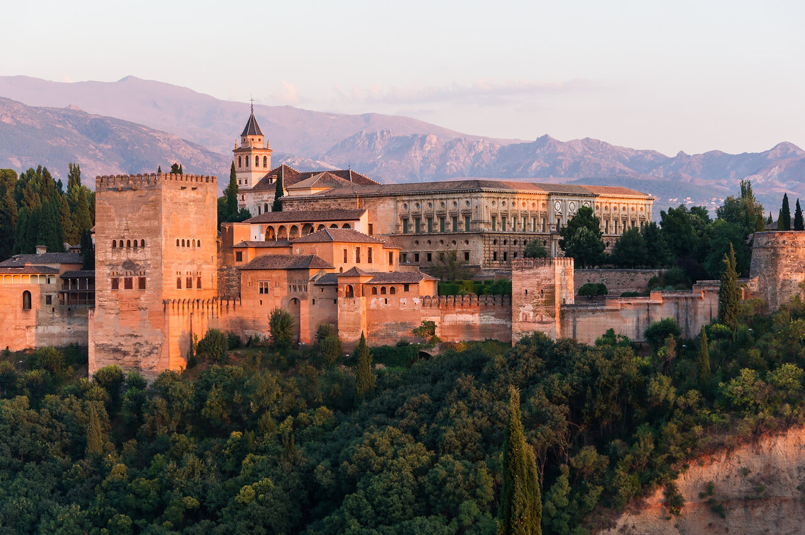
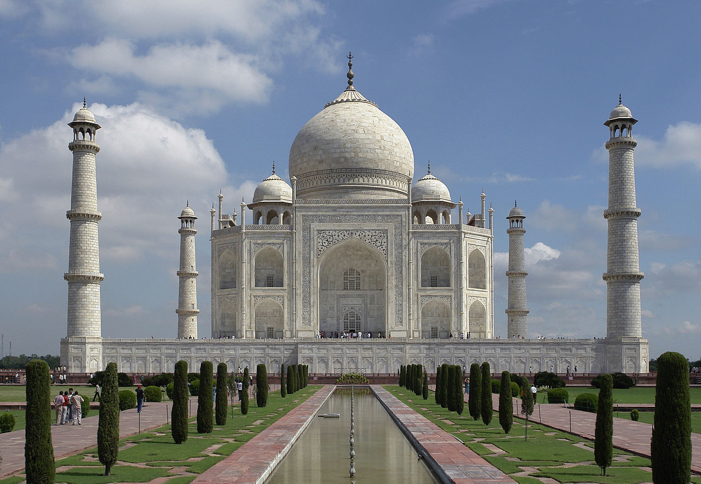
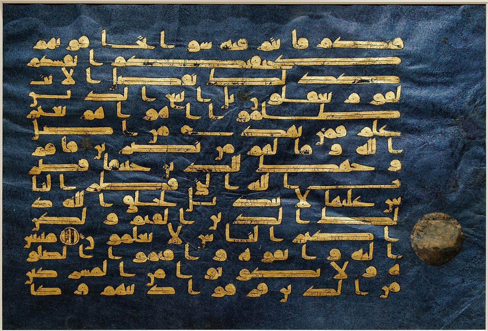
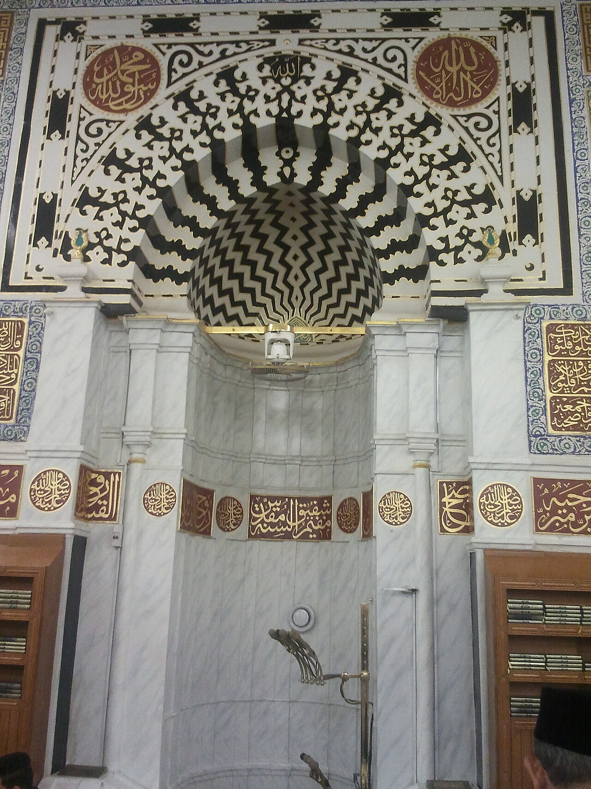
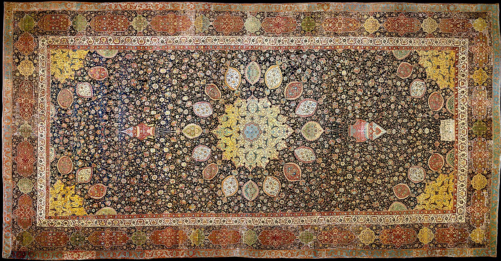
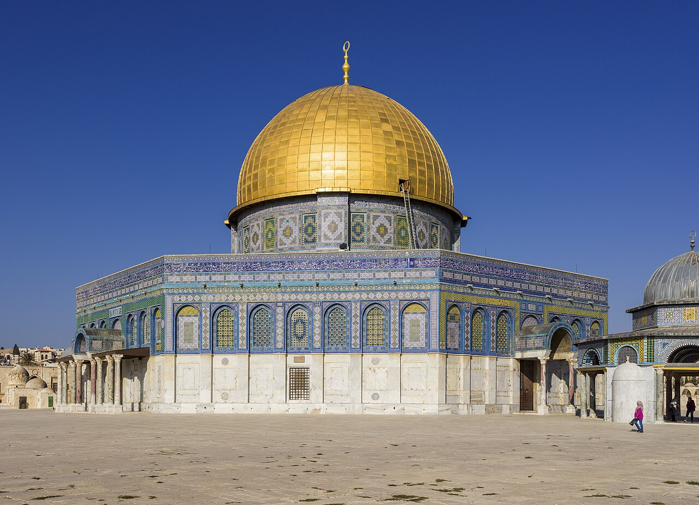
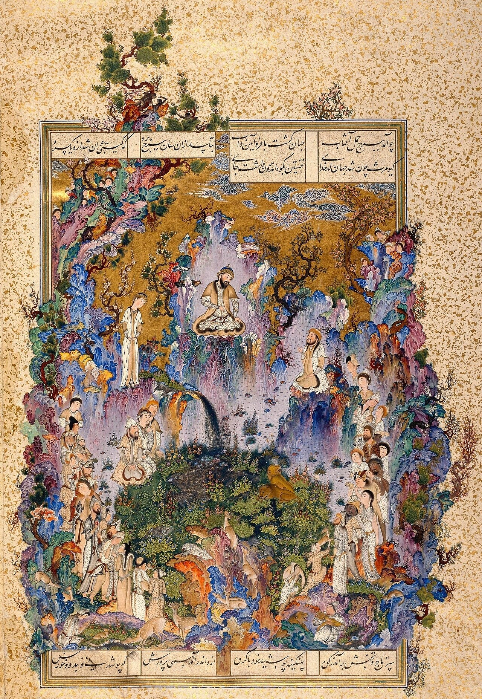
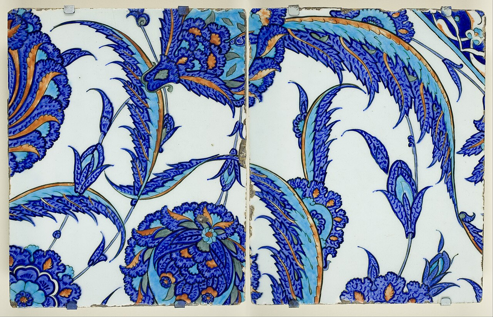
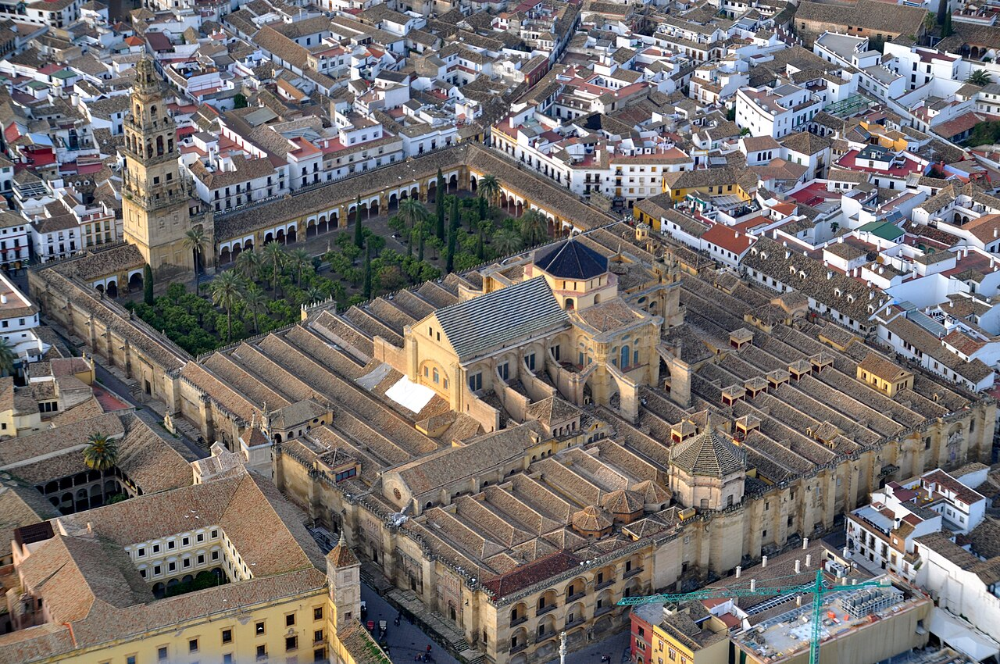
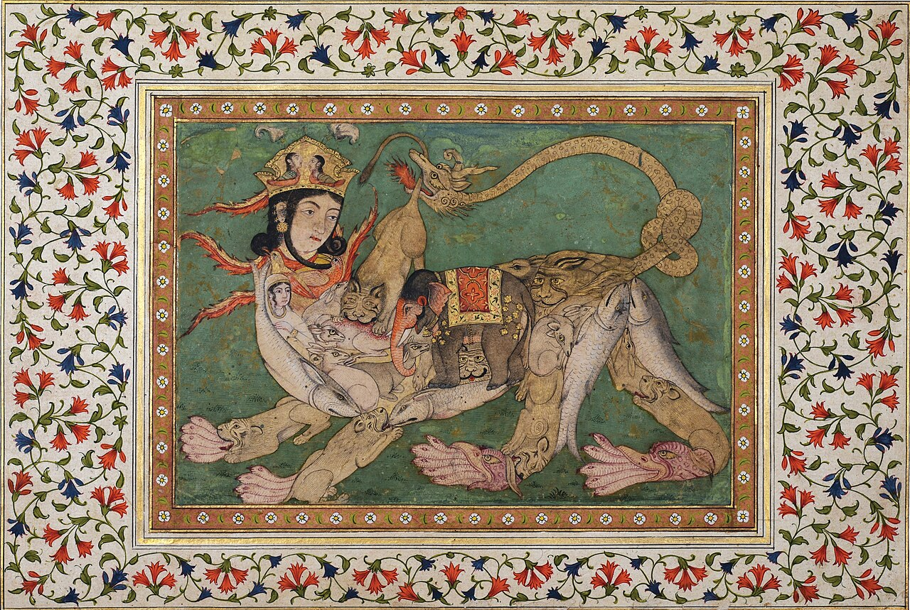

🏆 Meesterwerk: Alhambra Paleis
Het hoogtepunt van islamitische architectuur - geometrische perfectie in Granada

Nasrid Dynasty, 14e eeuw · Granada, Spanje · Muqarnas, stucwerk, tegels
🎨 STIJLFIGUREN & THEMA'S
📜 Kalligrafie
Het goddelijke woord: Koranverzen als hoogste kunstvorm. Arabisch schrift verheven tot schoonheid.
⬡ Geometrie
Oneindige patronen: Wiskundige precisie. Tessellaties die het oneindige symboliseren.
🌿 Arabesque
Organische vormen: Ranken, bladeren, bloemen. Rhythme en flow zonder begin of einde.
🚫 Aniconisme
Geen afbeeldingen: Vermijding van menselijke/dierlijke figuren in religieuze context.
☀️ Licht
Spirituele verlichting: Licht als metafoor voor Allah. Vensters, lantaarns, spiegels.
📚 TIJDSGEEST CONTEXT
🌍 POLITIEK PERSPECTIEF
PLACEHOLDER - Te expanden naar 500+ woorden. Islamitische kalifaten, veroveringen, dynastieën (Omajjaden, Abbasiden, Ottomanen), politieke eenheid versus culturele diversiteit.
📖 LITERAIR PERSPECTIEF
PLACEHOLDER - Te expanden naar 500+ woorden. Perzische poëzie (Hafez, Rumi), Duizend-en-één-nacht, Shahnama (Boek der Koningen), Arabische literatuur.
🧠 PSYCHOLOGISCH PERSPECTIEF
PLACEHOLDER - Te expanden naar 500+ woorden. Soefisme en mystiek, contemplatie, meditatie, overgave (islam = onderwerping).
🏛️ HISTORISCH PERSPECTIEF
PLACEHOLDER - Te expanden naar 500+ woorden. Zijderoute handel, wetenschappelijke revolutie, bibliotheken, vertalingen, kruistochten, Reconquista.
💭 FILOSOFISCH PERSPECTIEF
PLACEHOLDER - Te expanden naar 500+ woorden. Islamitische filosofie (Avicenna, Averroës), theologische debatten, verhouding tot Griekse filosofie.
🖼️ TOP 10 MEESTERWERKEN
1. Alhambra Paleis Interieur (14e eeuw)
Nasrid Dynasty · Granada, Spanje · Architectuur, stucwerk, tegels
Achtergrond: Het Alhambra is het ultieme meesterwerk van islamitische architectuur in Europa. Gebouwd door de Nasriden, de laatste Moslimdynastie in Spanje. Het paleis combineert geometrische patronen, kalligrafie en arabesque tot een harmonieus geheel.
🔍 STIJLANALYSE
Architectuur: Muqarnas - stalactiet-achtige gewelven. Patio's met waterpartijen.
Decoratie: Elke centimeter bedekt met patronen. Geen lege ruimtes (horror vacui).
Symboliek: Oneindige patronen = oneindigheid van Allah. Water = paradijs.
2. Taj Mahal (1653)
Shah Jahan · Agra, India · Wit marmer, edelstenen · 17 hectare complex

Achtergrond: Shah Jahan bouwde dit mausoleum voor zijn geliefde vrouw Mumtaz Mahal. Het is het perfecte symmetrische gebouw, een meesterwerk van Mughal-architectuur.
🔍 STIJLANALYSE
Compositie: Volmaakte symmetrie. Centrale koepel, vier minaretten. Spiegelbeeld in vijver.
Materiaal: Wit marmer met inlegwerk van edelstenen (pietra dura). Verandert van kleur met het licht.
Invloed: Perzische, Indiase en islamitische elementen verenigd.
3. Blue Quran Manuscript (9e eeuw)
Ifriqiya (Tunesië) · Kalligrafie op perkament · Goud op indigo

Achtergrond: Een van de meest luxueuze Korans ooit gemaakt. Gouden letters op diepblauw perkament. Waarschijnlijk gemaakt voor de Aghlabidische kaliefen.
🔍 STIJLANALYSE
Kalligrafie: Kufisch schrift - hoekig, monumentaal. Goudblad op indigo-geverfd perkament.
Techniek: Elk vel met de hand geverfd. Ongebruikelijk duur materiaal.
Symboliek: Blauw = hemel/paradijs. Goud = goddelijk licht.
4. Mihrab uit Isfahan (1354)
Ilkhanid periode · Isfahan, Iran · Geglazuurde tegels · 3,5 meter hoog

Achtergrond: De mihrab is de gebedsnis die de richting naar Mekka aangeeft. Dit exemplaar uit de Jameh Mosque van Isfahan is een hoogtepunt van tegelkunst.
🔍 STIJLANALYSE
Vorm: Boogvorm met punt. Mozaïek van duizenden tegels.
Decoratie: Koranverzen in Thuluth-kalligrafie. Geometrische patronen in blauw en goud.
Functie: Lichtinval accentueert de diepte. Spiritueel brandpunt.
5. Ardabil Tapijt (1539-1540)
Tabriz, Iran · Safavid periode · Wol, zijde · 10,5 × 5,3 meter

Achtergrond: Het beroemdste Perzische tapijt ter wereld. Gemaakt voor het Ardabil-heiligdom. Er bestaan twee identieke exemplaren - één in Londen, één in Los Angeles.
🔍 STIJLANALYSE
Compositie: Centraal medaillon met stralend patroon. Symmetrisch ontwerp.
Techniek: 25-30 miljoen knopen. 10 jaar werk door een heel atelier.
Kleuren: Diep blauw, rood, ivoor. Natuurlijke verfstoffen.
6. Dome of the Rock Interieur (691)
Jeruzalem · Omajjaden · Gouden koepel, mozaïeken · 20 meter diameter

Achtergrond: Het oudste bewaarde islamitische monument. Gebouwd op de Tempelberg, heilig voor joden, christenen en moslims. De gouden koepel is een icoon van Jeruzalem.
🔍 STIJLANALYSE
Architectuur: Byzantijnse invloed. Centraalbouw op octogonale basis.
Mozaïeken: 1200 m² gouden mozaïeken. Plantenmotieven, juwelen, kroon.
Kalligrafie: Koranverzen in gouden tegels rondom de binnenkoepel.
7. Shahnama Miniature (16e eeuw)
Safavid periode · Tabriz, Iran · Gouache op papier · 30 × 20 cm

Achtergrond: Het Shahnama (Boek der Koningen) van Ferdowsi is het Perzische nationale epos. Miniaturen beelden heroïsche scènes uit van koningen, helden en demonen.
🔍 STIJLANALYSE
Verhalend: Meerdere scènes in één afbeelding. Levendige actie.
Kleur: Rijk palet - lapis lazuli blauw, goud, scharlakenrood.
Detail: Microscopisch kleine details. Elk patroon perfect uitgevoerd.
8. Iznik Keramiek Schaal (16e eeuw)
Iznik, Turkije · Ottomaanse periode · Frit keramiek · 40 cm diameter

Achtergrond: Iznik-keramiek is het hoogtepunt van Ottomaanse ambachtskunst. Deze schalen werden gebruikt voor feesten en als architecturale decoratie.
🔍 STIJLANALYSE
Techniek: Frit-pasta (glaspasta) voor witte basis. Qorami-rood - unieke kleur die alleen Iznik heeft.
Patronen: Tulpen, anjers, hyacinten. Chinese invloed via de Zijderoute.
Kleuren: Kobaltblauw, turkoois, saliegroen, koraalrood op wit.
9. Grote Moskee van Córdoba - Bogen (8e-10e eeuw)
Omajjaden van Córdoba · Spanje · Horseshoe bogen, marmer · 23.400 m²

Achtergrond: De Mezquita is een van de belangrijkste islamitische monumenten in het westen. De bos van bogen creëert een oneindigheidseffect dat typerend is voor islamitische kunst.
🔍 STIJLANALYSE
Architectuur: 856 zuilen met dubbele bogen. Rood-witte steen voor visueel ritme.
Ruimte: Geen centraal brandpunt. Overal bidden mogelijk.
Invloed: Visigotische, Byzantijnse en Romeinse elementen hergebruikt.
10. Buraq Miniature (16e eeuw)
Isfahan school · Safavid periode · Gouache, goud op papier · 25 × 18 cm

Achtergrond: De Buraq is het mythische wezen dat de profeet Mohammed droeg tijdens zijn Nachtreis van Mekka naar Jeruzalem. Vaak afgebeeld met vrouwelijk gezicht en pauwenstaart.
🔍 STIJLANALYSE
Onderwerp: Fantastisch wezen - paard met vleugels, vrouwengezicht. Hoewel aniconisme, miniaturen maakten uitzondering voor seculiere/mythologische scènes.
Stijl: Isfahan school - elegante figuren, delicate penseelstreken.
Details: Gouden halo, sierlijk tuinlandschap, wolkenbanden.
📚 CONCLUSIE: DE WEG NAAR HET ONEINDIGE
De islamitische kunst leert ons:
- Kalligrafie: Het geschreven woord is de hoogste kunst
- Geometrie: Wiskundige patronen weerspiegelen de orde van het universum
- Aniconisme: Door afwezigheid van figuren, aanwezigheid van het goddelijke
- Arabesque: Organische vormen zonder begin of einde
- Licht: Materieel licht als metafoor voor spirituele verlichting
"Allah is mooi en houdt van schoonheid." - Hadith